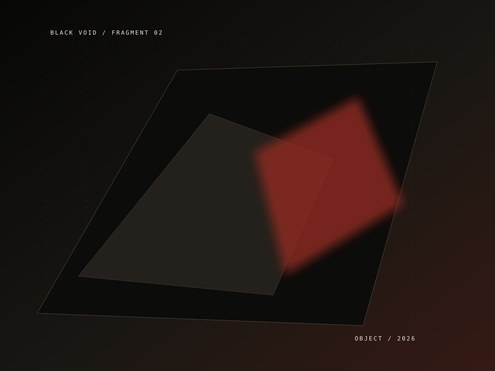

BLACK VOID / 05
Problema / decisão / sistemaO que muda
quando a ideia
entra em operação.
Cada caso começa com uma tensão concreta. O resultado não é uma peça isolada, mas um sistema que dá ao time mais clareza para seguir.
Como uma decisão fica

01 / TENSÃOQuando a forma antiga já não comporta o próximo movimento.
O problema raramente chega com o nome certo. Antes de construir, a gente escuta o que está tentando acontecer.
02 / DECISÃOEscolher uma estrutura que não precise ser defendida todos os dias.
Uma boa decisão reduz o número de explicações necessárias para a operação continuar.
03 / PERMANÊNCIAO resultado é a capacidade de seguir sem pedir permissão.
É quando a entrega deixa de parecer entrega e começa a funcionar como parte da casa.
Objeto de estudo
Uma camada visual para tornar a ideia mais próxima, concreta e memorável.
FIG. 05
Cases como matéria.
Não mostramos apenas o que fizemos. Mostramos a mudança de estado.
BLACK VOID / NOTA DE ARQUIVOMapa operacional
Casos em arquivo
01Signal
Camada de decisão para operações críticas.
SISTEMA02Arco
Reenquadramento de marca e interface.
IDENTIDADE03Nexo
Automação orientada por revisão humana.
FLUXO04Noir
Infraestrutura e observabilidade para produto digital.
CLOUD